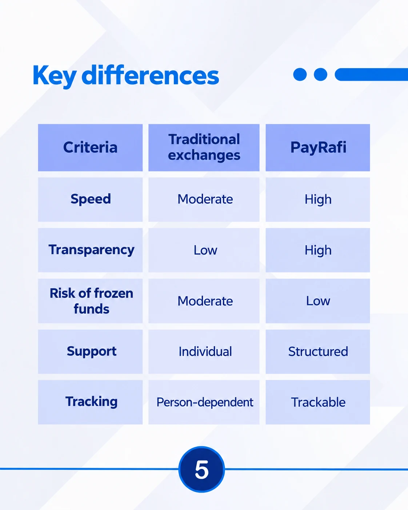

Start with the question
Connect business priorities with what the audience needs to understand before taking the next step.
See PayRafi’s content decisionsRazieh Eslami / Selected portfolio
I turn audience questions and expert knowledge into clear social content — connecting the plan, the visual design, and the published work.
Content planning · Visual design · Performance review
01 / Selected work
Two client projects, with the decisions, deliverables, and evidence behind the work.



Planning and designing a connected content system for Instagram, LinkedIn, and Telegram.


Managing an Instagram content workflow that connected specialist knowledge with everyday client questions.
02 / My approach
The process changes with the brief. These are the connections I pay attention to.
Connect business priorities with what the audience needs to understand before taking the next step.
See PayRafi’s content decisionsConnect topics, formats, design, and publishing into a repeatable workflow across the relevant channels.
See BodySense’s workflowUse available performance data to identify questions and next tests, with a clear boundary between a result and a hypothesis.
See documented examplesLet’s talk about the audience, the brief, and what needs to happen next.